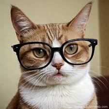

Strona główna
Koty - zwierzęta internetu

Koty od dawna są jednymi z najpopularniejszych bohaterów internetu.
Dzięki swoim zabawnym, uroczym i czasem dziwacznym zachowaniom,
zdobyły serca milionów użytkowników na całym świecie. Memów, filmików
i zdjęć z kotami nie brakuje na żadnej platformie społecznościowej, od
YouTube po TikTok. Wiele z tych treści stało się kultowe, a koty,
takie jak Grumpy Cat czy Nyan Cat, zdobyły globalną popularność. Koty
w internecie nie tylko bawią, ale również pełnią rolę terapeutyczną,
pomagając w redukcji stresu i poprawie nastroju. To fenomen, który
trwa i cieszy się niesłabnącą popularnością.